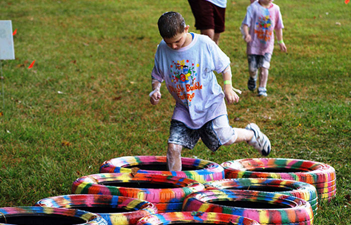

Campamento Guerreros del Metal
Campamento Guerreros del Metal
Contamos con una amplia selección de actividades para todas las edades monitorizadas por los mejores monitores del Estado:
A destacar:
- Atrapa la bandera
- Norte, Sur, Este y Oeste
- Caballeros a sus caballos
- Gymkanas temáticas
- Beso o placaje
- La hamburguesa
- El pistolero, juego de conocimiento
- El juego de Kim
Funcionamiento:
La bandera
El juego consiste en atrapar la bandera del equipo contrario. Una vez que estén preparados, los participantes divididos en dos equipos deben contar con una bandera grupal y una minibandera individual o pañoleta. La bandera grupal se debe esconder en una parte de su territorio previamente establecido y el objetivo será conseguir robar la bandera al equipo contrario y vigilar que no roben la suya propia.
Ejemplo didáctico
Norte, Sur, Este y Oeste
Para colocarse deben imitar el orden habitual de una brújula. El monitor dirá dos puntos cardinales y se deben entrecruzar. ¿Qué ocurre? Mientras ambos grupos se cruzan tendrán que atrapar al equipo contrario y llevárselo a su propio grupo. Es decir, si tienen que cambiarse el lado el equipo Norte con el equipo Sur, los primeros intentarán capturar a los del equipo del sur para llevárselos a su grupo y viceversa.
Ejemplo didáctico
Caballeros a sus caballos
Es un juego muy divertido que se realiza en parejas. Los jugadores se colocan en dos círculos, donde una pareja estará detrás de la otro y todos miran hacia dentro. Cuando el monitor, que está en el centro, grita “caballeros a sus caballos” el que está detrás debe pasar por debajo de las piernas del de delante. Cuando se consigue, este debe correr por fuera del círculo lo más rápido posible y subirse a la espalda de su pareja. Se van eliminando los más lentos hasta que quedan dos ganadores.
Ejemplo didáctico
Gymkanas temáticas
Son actividades que nos permiten realizar juegos de distensión mientras cumplimos con algún objetivo y nos basamos en una temática concreta. Una gymkana es un juego en el que los participantes tendrán que superar una serie de pruebas de manera individual o grupal. Lo más común es que se separen en pequeños grupos y tengan que ir pasando por diferentes retos y pruebas. Los grupos pueden competir entre sí o no ya que dependerá del objetivo que se quiera dar al juego. Normalmente, cada grupo debe conseguir un pequeño premio en cada una de las pruebas que realicen para alcanzar un premio final, lo que dará más emoción al juego.
Ejemplo didáctico
Beso o placaje
Los niños y las niñas se separan en dos filas distintas y se cogen cada uno de ellos un número (los chicos) o una letra (las chicas). Un niño o una niña se sentará en el suelo en el medio del círculo y a quien le toque tendrá que darle un beso en la mejilla mientras que el otro intentará evitar que lo consiga.
Ejemplo didáctico
La hamburguesa
Tiene un funcionamiento muy sencillo y es perfecto para liberar tensiones o desperezarse a primera hora de la mañana o después de la comida. Un niño saldrá del grupo y el resto decidirán cada uno un ingrediente de la hamburguesa. El niño que estaba fuera se debe tumbar en el suelo y el monitor irá diciendo uno a uno los ingredientes: tomate, lechuga, queso… el niño que está abajo tendrá que adivinar quién se ha tumbado encima. Cuando lo descubra se cambia.
Ejemplo didáctico
El pistolero, juego de conocimiento
El juego es muy sencillo y consiste en ser el más rápido diciendo el nombre del compañero para ir eliminando a los contrincantes. Los participantes se distribuyen formando un círculo. En el centro se coloca el monitor que señala con el dedo a un participante del círculo. Este tiene que agacharse permitiendo a los compañeros que tiene a sus dos lados se “disparen” entre sí. El primero que diga el nombre del otro habrá ganado la ronda.
Ejemplo didáctico
El juego de Kim
El monitor del campamento será el encargado de preparar pequeños cuencos con diferentes alimentos. El juego consiste en que los niños descubran con los ojos cerrados qué alimento es. Lo divertido del juego reside en mezclar alimentos que sepan mal con otros que sepan muy bien, que tengan texturas raras y olores muy fuertes. Alimentos que suelen llamar la atención de los niños son el yogurt, el puré de patata, sal, pimienta, azúcar, tipos de sirope, kétchup, mostaza, gelatina…
Ejemplo didáctico
